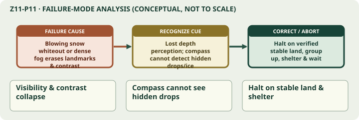

Z11-P11 · Navigation, weather and rescue · Adapted historical material
Halt and verify when whiteout or dense fog erases the trail
Prevent disorientation, cliff falls and thin-ice entry when blowing snow or dense fog destroys visual landmarks.
When it applies · Blowing snow, blizzard whiteout, dense valley fog or coastal fog obscuring trail markers and terrain contrast.
Equipment · Compass, offline/paper map, warm layers, shelter and whistle.

Actions
- Stop travel promptly as soon as landmarks, trail treads or depth contrast fade into whiteout or dense fog—continuing blindly leads straight off ledges or onto hidden water.[N07, E12, T06]
- Keep the entire group tightly together within arm's reach or voice range, add wind/cold protection and verify whether a short unmistakable backtrack to recent shelter exists.[N07, E05, E11]
- Remember that a compass needle shows direction only—it CANNOT warn you of cornices, stream drop-offs, vehicle traffic or thin lake ice hidden ten feet ahead in zero visibility.[N07, E12]
Failure recognition · Pushing forward across a snow-covered clearing in blowing snow hoping to spot the next trail sign, walking straight onto a frozen marsh.[N07, E12]
Verify · Confirm everyone is accounted for, sheltered from wind and holding on verified stable land until visibility returns safely.[N07, E05, E11, ED]
Stop or change course · Zero visibility with no unmistakable safe handrail or nearby refuge requires halting on stable ground, sheltering and alerting contacts or rescue.[N07, T06, E05]
Evidence and editorial notes
- E05 · NWS · What To Do If You're Caught in a Winter Storm (current web edition)
- Section: Outside and find shelter · Conditions: Cold, wet or windy winter conditions
Support: Block wind, stay dry and keep off cold ground. Keep exposure reduction separate from making a fire.
Limitations: Improvised windbreaks do not provide rated thermal protection or snow-load capacity. · Conflicting evidence: None; aligns with CDC-H.
Editorial note: Separates wind, ground, and moisture heat-loss pathways. · Specialist reviewer: Cold-weather shelter specialist
Primary source · checked 2026-11-24 - E11 · NPS · Hike Smart (current web edition)
- Section: Plan your hike; Stay together · Conditions: Groups on hiking routes
Support: Choose a route suited to the group's abilities and hike at a pace that keeps the group together.
Limitations: Fast hikers moving ahead at junctions is a leading driver of preventable separation. · Conflicting evidence: None; aligns with SAR prevention principles.
Editorial note: Core reference for group accountability and pacing cards. · Specialist reviewer: Group leaders and search and rescue
Primary source · checked 2026-11-24 - E12 · Minnesota DNR · Ice Safety (current web edition)
- Section: Ice Safety > basic precautions · Conditions: Minnesota ice edges and travel routes
Support: No ice is universally safe. Strength can differ over short distances; appearance or tracks alone cannot establish a safe crossing.
Limitations: Currents, springs, snow insulation, and freeze-thaw cycles weaken ice invisibly. · Conflicting evidence: None; mandates shore-bound detour for foundational walking parties.
Editorial note: Maintains strict separation from specialized B013 ice chapters. · Specialist reviewer: Ice safety and search and rescue
Primary source · checked 2026-11-24 - N07 · NWS · Fog Safety (current web edition)
- Section: Fog Safety > Visibility Loss and Travel Hazards · Conditions: Dense fog, valley mist, sea fog and blowing-snow whiteout
Support: Fog and whiteout collapse visual landmarks and depth perception rapidly, causing disorientation and unintentional terrain/traffic hazards; halt exposed travel early and rely on verified checkpoints or stay put.
Limitations: Compass bearings alone cannot reveal hidden cliffs, thin ice or drop-offs in zero visibility. · Conflicting evidence: Aligns with B014-P11 whiteout guidance.
Editorial note: Supports whiteout/fog stop thresholds and short-leg navigation boundaries. · Specialist reviewer: Meteorology and search and rescue
Primary source · checked 2026-11-24 - T06 · NPS · Outdoor Emergency Plan (current web edition)
- Section: If you get lost or hurt; call for help · Conditions: Outdoor US emergency
Support: Communicate location, last known point, situation and needs. Stay put when unable to establish a safe route unless immediate danger requires movement.
Limitations: Cell signal is unreliable in backcountry terrain; pre-trip plans bridge communication gaps. · Conflicting evidence: None; core lost-person decision rule.
Editorial note: Foundation for stay/signal/move and dispatch handoff cards. · Specialist reviewer: Search and rescue
Primary source · checked 2026-11-24
Source lineage · B014-P11 whiteout and NWS fog safety; adapted historical material · Classification · Adapted historical material.